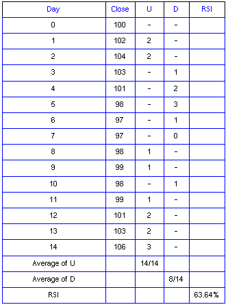
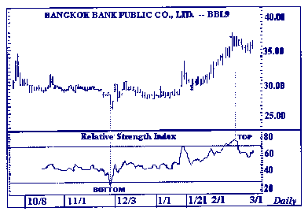
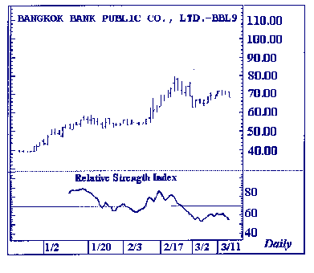
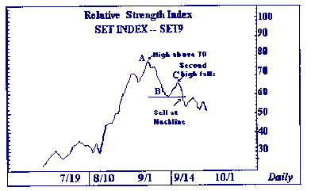
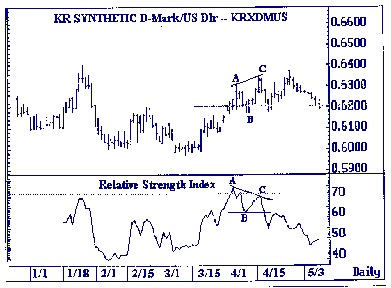
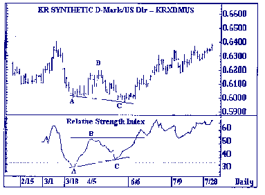
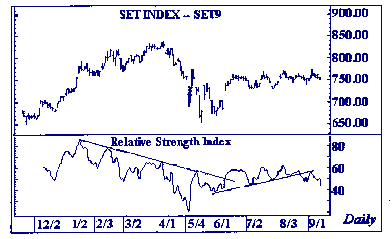
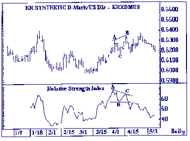
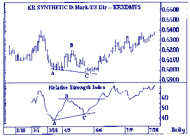

| << | 10 | >> |
การวิเคราะห์หลักทรัพย์โดยวิธีทางเทคนิค
เครื่องมือดัชนีกำลังสัมพัทธ์ (Relative Strength Index)
เครื่องมือดัชนีกำลังสัมพัทธ์ RSI : RELATIVE STRENGTH
INDEX
RSI เป็นเครื่องมือที่นำมาใช้วัดการแกว่งตัวของราคาหุ้น
สำหรับการลงทุนในช่วงหนึ่ง เพื่อดูภาวะการซื้อมากเกินไป (OVERBOUGHT) หรือขายมากเกินไป
(OVERSOLD) โดยใช้ระดับเหนือ 70% บอกภาวะ OVERBOUGHT และระดับต่ำกว่า 30% บอกภาวะ
OVERSOLD และยังใช้เป็นสัญญาณเตือนว่า แนวโน้มของราคาหุ้นที่กำลังมีทิศทางขึ้นหรือลงนั้น
กำลังใกล้จะอ่อนตัวลงหรือยัง โดยมีสัญญาณเตือนที่แสดงออกมาในรูปแบบของการแยกทางออก
(DIVERGENCE) ระหว่างราคาหุ้นกับ 14 RSI
ดัชนีกำลังสัมพัทธ์ (RSI) คือ การคำนวณหาพละกำลัง ที่ซ่อนตัวอยู่ของตลาดหรือของหุ้นใดหุ้นหนึ่ง
(INTERNAL STRENGTH) โดยดูจากอัตราส่วนที่ แกว่ง ไปมาอยู่ระหว่างการขึ้นลงโดยคิดเป็นเปอร์เซ็นต์
และภายใน เวลา ที่กำหนด ซึ่งส่วนใหญ่จะใช้ระยะเวลา 14 วัน เราจึงเรียกว่า 14
RSI
สูตรการคำนวณ 14 RSI
RSI = 100 - 100/1+RS
RS = ค่าเฉลี่ยของจำนวนที่เปลี่ยนแปลงเพิ่มขึ้นของราคาปิดใน 14 วัน
ค่าเฉลี่ยของจำนวนที่เปลี่ยนแปลงลดลงของราคาปิดใน 14 วัน
หรือใช้สูตร
RSI = 100 *U / U+D
U = AVERAGE OF 14 DAYS UP CLOSES
(ค่าเฉลี่ยของจำนวนที่เปลี่ยนแปลงเพิ่มขึ้นของราคาปิดใน 14 วัน)
D = AVERAGE OF 14 DAYS DOWN CLOSES
(ค่าเฉลี่ยของจำนวนที่เปลี่ยนแปลงลดลงของราคาปิดใน 14 วัน)
ตัวอย่างการคำนวณ RSI ในช่วง 14 วัน
 |
ระดับซื้อมากเกินไปและขายมากเกินไป (OVERBOUGHT & OVERSOLD)
ระดับ การซื้อมากเกินไป ของ 14 RSI อยู่ที่บริเวณระดับสูงเกิน 70% ส่วนระดับที่มีการขายมากเกินไปอยู่ต่ำกว่าบริเวณ
30% และมีกฎว่าถ้าเส้น 14 RSI ลดต่ำลงมามากเท่าใดจะทำให้เกิดภาวะ OVERSOLD ซึ่งโอกาสที่ราคาหุ้นจะตีกลับขึ้นไปในลักษณะการ
ปรับตัวทางเทคนิค มีอยู่สูง ในทางกลับกัน ถ้าเส้น 14 RSI วิ่งสูงขึ้นจนเข้าไปในเขต
OVERBOUGHT แล้ว โอกาสที่ราคาหุ้นจะมีการปรับตัวลงก็มีเช่นเดียวกัน
การใช้ 14 RSI ในการวิเคราะห์แผนภูมิราคามี 5 วิธี
1. ดูยอด (TOP) และฐาน (BOTTOM) มักจะเกิดยอดเหนือเส้น 70 และเกิดฐานใต้เส้น
30 โดยปรากฏยอดและฐานให้เห็นก่อนตลาด
 |
2. ใช้ดูรูปแบบซึ่งจะใช้ดูเช่นเดียวกับรูปแบบที่เกิดในแผนภูมิราคา แต่จะให้ความสำคัญกับรูปแบบ
HEAD & SHOULDERS ; DOUBLE TOPS & DOUBLE BOTTOMS ในลักษณะเป็นสัญญาณเตือนว่าราคาหุ้นจะมีการเปลี่ยนทิศทาง
โดยเฉพาะถ้ารูปแบบนั้นเกิดขึ้นในบริเวณเขต OVERBOUGHT หรือ OVERSOLD
 |
3. ดูการเหวี่ยงตัวของ 14 RSI ที่ไม่เป็นไปตามเป้าหมาย (FAILURE SWING)
โดยการตวัดกลับครั้งต่อไปไม่ประสบความสำเร็จ โดยเฉพาะในบริเวณเขต OVERBOUGHT หรือ
OVERSOLD
 |
TOP FAILURE SWING เกิดขึ้นเมื่อยอดแหลมของ RSI อยู่เหนือเส้น
70 (A) และยอดสูงใหม่ ? อยู่ต่ำกว่ายอดสูงเก่า (A) โดย TOP FAILURE SWING จะสมบูรณ์
เมื่อเส้น RSI เคลื่อนที่จากจุดยอด ? ลงต่ำกว่าจุดต่ำสุด (B) ทีอยู่ระหว่างยอดสูงทั้งสอง
(A และ C)
สัญญาณการขายจะมีอยู่ 3 ช่วง
เมื่อเส้น RSI อยู่เหนือเส้น 70 ที่ยอดสูง (A)
เมื่อเส้น RSI ไม่ทะลุเส้นต้าน (AC)
เมื่อเส้น RSI ทะลุเส้นหนุน (B)
โดยทั่วไปแล้วสัญญาณขายตามข้อ 3. จะมีความแม่นยำสูงสุด
 |
BOTTOM FAILURE SWING เกิดขึ้นเมื่อจุดฐานของ RSI อยู่ต่ำกว่าเส้น 30 A) และจุดฐานใหม่
(C) อยู่สูงกว่าจุดฐานเก่า (A) โดย BOTTOM FAILURE SWING จะสมบูรณ์เมื่อเส้น RSI
เคลื่อนที่จากจุดฐาน (C) ขึ้นสูงกว่าจุดสูงสุด (B) ที่อยู่ระหว่างจุดฐานทั้งสอง
(A และ B)
สัญญาณการซื้อจะมีอยู่
3 ช่วง
เมื่อเส้น RSI อยู่ต่ำกว่าเส้น 30 ที่จุดฐาน (A)
เมื่อเส้น RSI ไม่ทะลุเส้นหนุน (AC)
เมื่อเส้น RSI ทะลุเส้นต้าน (B)
โดยทั่วไปแล้วสัญญาณซื้อตามข้อ 3. จะมีความแม่นยำสูงสุด
4. การดูแนวหนุนและแนวต้าน บางครั้ง RSI จะแสดงระดับของแรงหนุน-แรงต้านได้ชัดเจนกว่าแผนภูมิราคา
โดยการใช้เครื่องมือวิเคราะห์แนวโน้ม เช่น TRENDLINES, MOVING AVERAGES
 |
5. การแยกทางออกจากกันระหว่างแผนภูมิราคากับ RSI
NEGATIVE DIVERGENCE
ในตลาดที่มีแนวโน้มขึ้น เมื่อเกิดลักษณะการเคลื่อนที่แยกทางกัน (DIVERGENCE) โดยเกิดขึ้นเมื่อราคาใหม่
(C) ขึ้นสูงกว่ายอดสูงของราคาเก่า (A) แต่ RSI ยอดใหม่ (C) อยู่ต่ำกว่า RSI ยอดเก่า
(A) ตรงจุดนี้จะเป็นสัญญาณเตือนว่าการวิ่งขึ้นของราคาจะวิ่งต่อไปได้อีกไม่นาน แล้วจะปรับตัวลงมาตาม
RSI
 |
POSITIVE DIVERGENCE
ในตลาดที่ราคามีแนวโน้มลดลง เมื่อยอดต่ำใหม่ของราคา (C) อยู่ต่ำกว่ายอดต่ำเก่าของราคา
(A) ในขณะที่ RSI ยอดใหม่ (C) อยู่สูงกว่า RSI ยอดเก่า (A) ตรงจุดนี้จะเป็นสัญญาณเตือนว่า
ราคาน่าจะสามารถสะท้อนกลับสูงขึ้นได้ในไม่ช้านี้ หรืออาจจะเป็นสัญญาณเตือนว่า การลดต่ำลงของราคานั้นใกล้จะจบลง
 |
ข้อสังเกตของ RSI
1. ปกติยอดสูงที่สูงกว่า 70 และยอดต่ำที่ต่ำกว่า 30 จะมีความสำคัญในการวิเคราะห์
2. FAILURE SWINGS (SUPPORT AND RESISTANCE PENETRATION) จะเป็นสัญญาณเตือนว่าจะมีการเปลี่ยนแปลงของราคา
3. โดยทั่วไปแล้ว RSI จะแสดงระดับแรงหนุน และแรงต้านได้ชัดกว่าราคา
4. เมื่อ RSI เคลื่อนที่ไม่ตามกันกับราคา (DIVERGENCE) จะชี้ให้เห็นถึงแนวโน้มที่ราคาจะเปลี่ยนไปตามทิศทางของ
RSI
 |
| << | 10 | >> |